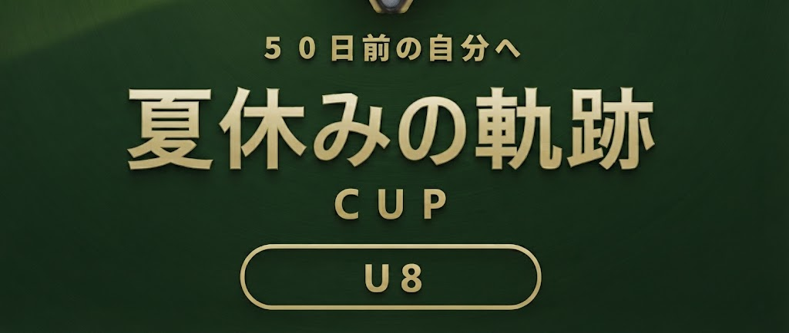

⚠ この画面は仮の組み合わせで表示しています。
チーム名の「（仮）」が取れたものが本番です。抽選後に差し替えます。
順位の決め方（勝点→得失点差→…）は主催者に確認中です。
試合結果の読み込み中…
（スプレッドシートの設定が済むと、ここに全試合が並びます）
順位表の読み込み中…
（スコアが入力されると自動で並び替わります）
※ リーグ戦は3段階あります。
予選リーグ（3チーム × 6ブロック）→ 各ブロックの1・2位が上位リーグ（3チーム × 4ブロック）、
3位が下位リーグ（3チーム × 2ブロック）へ進みます。
※ 4グループ × 4チームの総当たり（各チーム3試合・全24試合）。
各組の1位が1位トーナメント、2位が2位トーナメント、3位が3位トーナメント、4位が4位トーナメントに進みます。
トーナメントの読み込み中…
（グループリーグの結果に連動して対戦カードが埋まります）
※ 上位リーグの各組1位が1位トーナメント（1-4位決定戦）、
2位が2位トーナメント（5-8位決定戦）、3位が3位トーナメント（9-12位決定戦）へ。
下位リーグは1位同士・2位同士・3位同士で対戦し、13-18位が決まります。
上位リーグ進出チームは6試合、下位リーグ進出チームは5試合。18位まですべて決まります。
※ 順位別に4つのトーナメントを行います。
1位トーナメントで1〜4位、2位トーナメントで5〜8位、
3位トーナメントで9〜12位、4位トーナメントで13〜16位が決まります。
各トーナメントは4チームで、準決勝2試合 → 決勝・3位決定戦（計4試合）。
全チームが5試合（予選3＋トーナメント2）を戦い、16位まですべて決まります。
最終順位の読み込み中…
（決勝トーナメント終了後に確定します）
県外からお越しのチームもあるため、地図は大きめに置く想定です。
* が付いたチームは、正式な表記を主催者に確認中です。
各チームのエンブレム画像をいただければ、文字の代わりに差し替えられます。